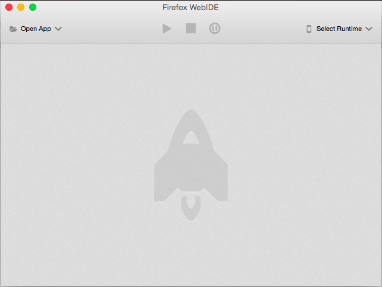
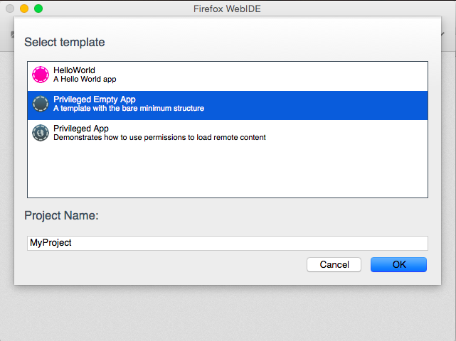
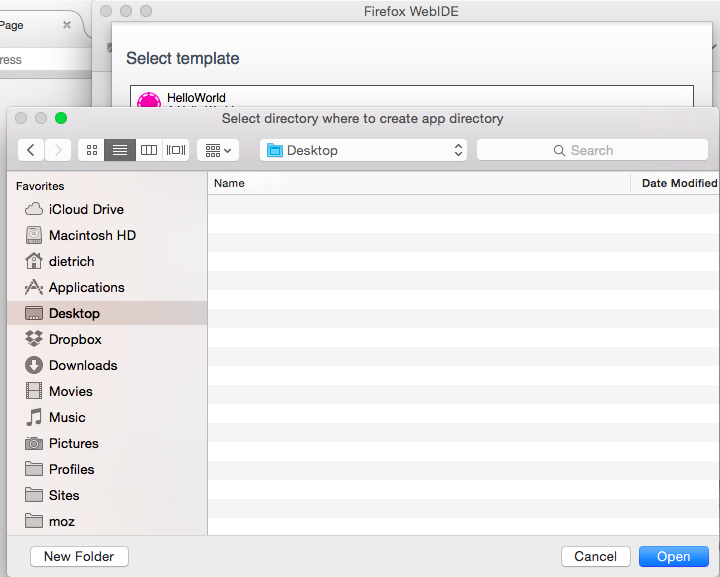
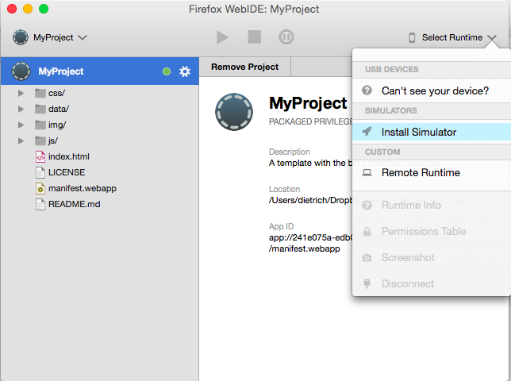
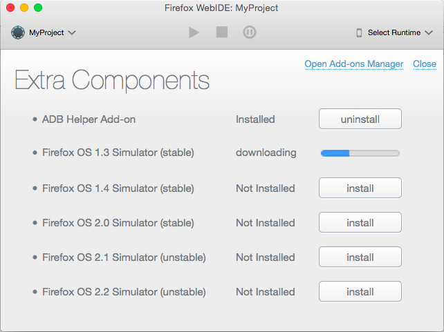
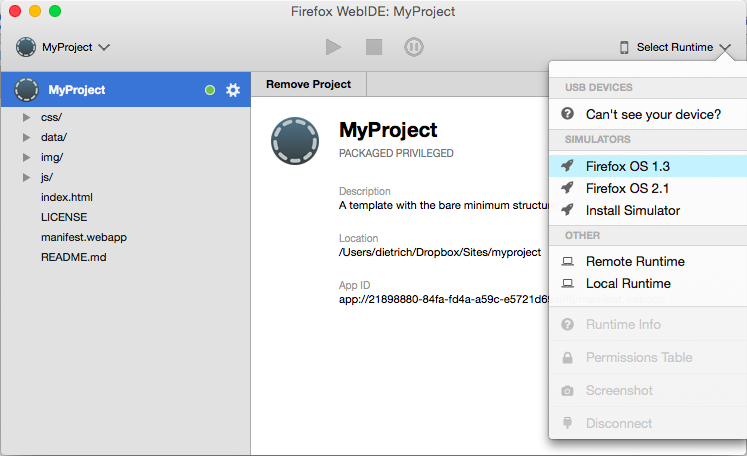

Firefox OS - Developer Environment
 Photo: Hulton Getty
Photo: Hulton Getty
- Firefox Developer Edition
- ...
- Seriously.
- Firefox Nightly
- Command line
- ADB
- Your source control tools
- Your editor (#vim4life)
WebIDE - Where the Magic Happens

- Built in to Firefox Nightly
- Create new apps
- Manage existing apps
- Text Editor
- Package apps
- Debug apps
- Run the simulator
- Connect to devices
WebIDE - New Privileged App

WebIDE - Select your folder

WebIDE - Choosing a Runtime

WebIDE - Download Simulator

WebIDE - Select Simulator Version

 Photo: befuddledsenses
Photo: befuddledsenses